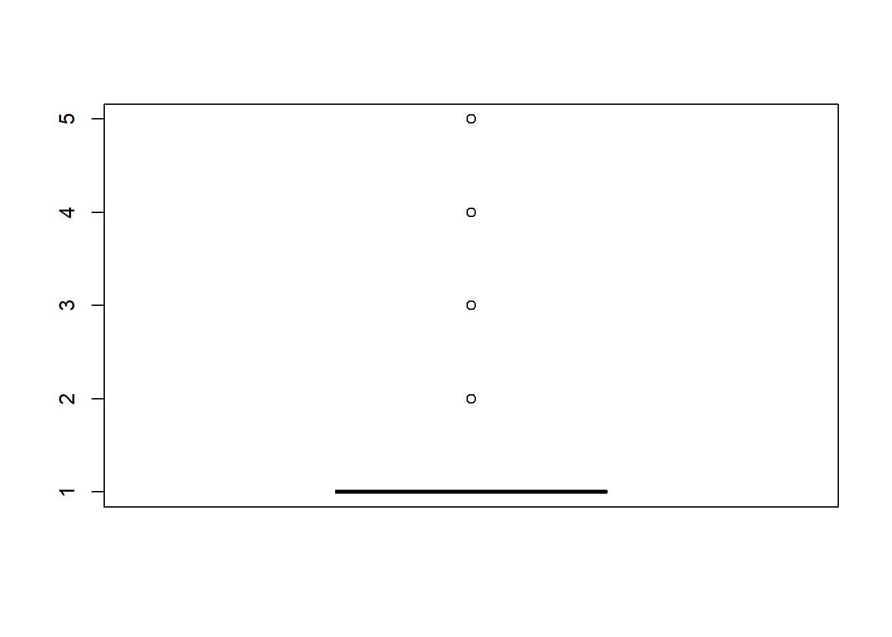

dataCar=read.csv("C:/Users/ReMarkt/Downloads/dataCar.csv")Untitled
1. The dimension of the dataframe dataCar (i.e., num. of rows, num. of columns) is: <67856, 11>
2. The first six lines of this data are
library(kableExtra)
#|warning:false
dataCar|>head() |> kableExtra::kbl( booktabs = T,linesep = "")|>
kable_styling(latex_options = c("scale_down"))| X | veh_value | exposure | clm | numclaims | claimcst0 | veh_body | veh_age | gender | area | agecat |
|---|---|---|---|---|---|---|---|---|---|---|
| 1 | 1.06 | 0.3039014 | 0 | 0 | 0 | HBACK | 3 | F | C | 2 |
| 2 | 1.03 | 0.6488706 | 0 | 0 | 0 | HBACK | 2 | F | A | 4 |
| 3 | 3.26 | 0.5694730 | 0 | 0 | 0 | UTE | 2 | F | E | 2 |
| 4 | 4.14 | 0.3175907 | 0 | 0 | 0 | STNWG | 2 | F | D | 2 |
| 5 | 0.72 | 0.6488706 | 0 | 0 | 0 | HBACK | 4 | F | C | 2 |
| 6 | 2.01 | 0.8542094 | 0 | 0 | 0 | HDTOP | 3 | M | C | 4 |
3. Using the R function str(), we get the structure of the data
str(dataCar)'data.frame': 67856 obs. of 11 variables:
$ X : int 1 2 3 4 5 6 7 8 9 10 ...
$ veh_value: num 1.06 1.03 3.26 4.14 0.72 2.01 1.6 1.47 0.52 0.38 ...
$ exposure : num 0.304 0.649 0.569 0.318 0.649 ...
$ clm : int 0 0 0 0 0 0 0 0 0 0 ...
$ numclaims: int 0 0 0 0 0 0 0 0 0 0 ...
$ claimcst0: num 0 0 0 0 0 0 0 0 0 0 ...
$ veh_body : chr "HBACK" "HBACK" "UTE" "STNWG" ...
$ veh_age : int 3 2 2 2 4 3 3 2 4 4 ...
$ gender : chr "F" "F" "F" "F" ...
$ area : chr "C" "A" "E" "D" ...
$ agecat : int 2 4 2 2 2 4 4 6 3 4 ...4. We made use of the function subset() to delete the first column of dataCar and the function transform() to transform the variables clm, numclaims, veh_body, veh_age, gender, area, and agecat to factors. Here is the summary of the transformed dataCar
datCar=subset(dataCar,select = -X)
datCar <- datCar |> transform(
clm = factor(clm),
numclaims = factor(numclaims),
veh_body = factor(veh_body),
veh_age = factor(veh_age),
gender = factor(gender),
area = factor(area),
agecat = factor(agecat)
)
summary(datCar)|> kableExtra::kbl( booktabs = T,linesep = "")|>
kable_styling(latex_options = c("scale_down"))| veh_value | exposure | clm | numclaims | claimcst0 | veh_body | veh_age | gender | area | agecat | |
|---|---|---|---|---|---|---|---|---|---|---|
| Min. : 0.000 | Min. :0.002738 | 0:63232 | 0:63232 | Min. : 0.0 | SEDAN :22233 | 1:12257 | F:38603 | A:16312 | 1: 5742 | |
| 1st Qu.: 1.010 | 1st Qu.:0.219028 | 1: 4624 | 1: 4333 | 1st Qu.: 0.0 | HBACK :18915 | 2:16587 | M:29253 | B:13341 | 2:12875 | |
| Median : 1.500 | Median :0.446270 | NA | 2: 271 | Median : 0.0 | STNWG :16261 | 3:20064 | NA | C:20540 | 3:15767 | |
| Mean : 1.777 | Mean :0.468651 | NA | 3: 18 | Mean : 137.3 | UTE : 4586 | 4:18948 | NA | D: 8173 | 4:16189 | |
| 3rd Qu.: 2.150 | 3rd Qu.:0.709103 | NA | 4: 2 | 3rd Qu.: 0.0 | TRUCK : 1750 | NA | NA | E: 5912 | 5:10736 | |
| Max. :34.560 | Max. :0.999316 | NA | NA | Max. :55922.1 | HDTOP : 1579 | NA | NA | F: 3578 | 6: 6547 | |
| NA | NA | NA | NA | NA | (Other): 2532 | NA | NA | NA | NA |
5. Below is a Barplot of numclaims.
